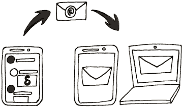

Delta Chat je nový četovací messenger, který posílá zprávy přes e-mail, pokud možno zašifrované metodou Autocrypt. Netřeba žádného nového účtu. Pro Delta Chat prostě použijete ten, který už máte pro svůj e-mail.

Delta Chatem můžete napsat na jakýkoli e-mail i v případě, že příjemce Delta Chat nepoužívá. Není nutné aby příjemce instaloval stejnou aplikaci jako vy, jak vyžadují ostatní četovací systémy.
Delta Chat samočinně ukazuje:
Ostatní zprávy se neobjeví samočinně, a jsou k nalezení v Výzvy ke spojení. Otamtud je možné odpovědí začít hovor.
Profilový obrázek lze zvolit v nastavení. Když napíšeš svému kontaktu, nebo přidáš nový vyfocením QR kódu, tyto kontakty automaticky uvidí tvůj profilový obrázek.
Contacts who don’t use Delta Chat do not see the profile picture (however, of course, they can install Delta Chat :)
Z důvodu soukromí nikdo nevidí tvůj profilový obrázek dokud jim nenapíšeš.
Profilový obrázek není posílán s každou zprávou, ale dostatečně často k tomu aby tvé kontakty zvuobdrželi obrázek i když začnou používat nové zařízení.
Podobně jako ostatní e-mailové programy, např. Thunderbird nebo Outlook, program potřebuje heslo k tomu aby mohl posílat e-maily. Samozřejmě, že heslo je uloženo pouze na tvém přístroji. Heslo je přenášeno pouze při přihlašení k e-mailovému serveru, který má i beztak přístup k tvým e-mailům.
Poskytovatelé e-mailu s podporou OAuth2, např. “gmail.com” či “yandex.ru”, nepotřebují při přihlašování tvé heslo. V takovém případě je uložen pouze vygenerovaný přístupový kód.
Delta Chat má otevřený zdrojový kód, ze kterého lze ověřit, že program s osobními daty zachází bezpečně. Jsme rádi za každou odezvu, která udělá Delta Chat bezpečnější pro všechny.
Dle užívaného operačního systému můžeš být dotázán na udělení povolení této aplikaci. Zde je co Delta Chat dělá s těmito povoleními:
Ověřená skupina je hovor zaručující jejím členům ochranu proti útočníkům. Všechny zprávy chrání end-to-end šifrování, a členové se mohou připojit ofocením Zvacího QR kódu.. Všichni členové jsou tak propojeni posloupností pozvánek, které zaručují důsledné šifrování proti útokům na síti nebo od poskytovatele. Více o R&D této funkce je na: countermitm.readthedocs.io
Od prosince 2019, zůstává “ověřená skupina” jen pokusnou funkcí. Je průběžně zdokonalována, a od uvedení v roce 2018 bylo odstraněno mnoho chyb. Nicméně zejména u velkých skupin se můžou objevit nesrovnalosti a zprávy se jeví nečitelně. V roce 2020 probíhá bezpečnostní rozbor a je uvedeno několik nových vylepšení protokolů pro QR-připojení. Je šance, že se u této funkce brzy zbavíme označení “pokusné”.
Buď se odeber ze seznamu členů a nebo vymaž celý skupinový hovor. K opětovnému připojení v budoucnu požádej nějakého člena skupiny o znovupřidání.
Jiná možnost je “Umlčení” skupiny, což znamená nadále přijímat a také posílat zprávy, ale nebudeš dostávat upozrnění na nově příchozí zprávy.
Ano. Delta Chat používá standard Autocrypt Level 1 a proto může ve spojení s ostatními Autocrypt aplikacemi šifrovat zprávy tak, že je lze číst pouze na koncových zařízeních.
Delta Chat také podporuje silné end-to-end šifrování, které je bezpečné i proti aktivním útokům, viz “ověřené skupiny” uvedené níže.
Nic.
Delta Chat (a ostatní aplikace podporující Autocrypt-compatible e-mail) sdílí “kliče” nutné pro end-to-end šifrování samočinně s první zaslanou zprávou. Po ní jsou všechny zprávy samočinně šifrovány end-to-end. Pokud jeden z účastníků hovoru nemá e-mailový program s Autocryptem, zprávy nejsou šifrovány dokud Autocrypt není použitelný na obou koncích.
K úplnému vypnutí šifrování vyber příslušnou volbu v Nastavení či v Pokročilém nastavení.
Pokud jsi v bezprostřední blízkosti účastníka hovoru:
Pokud je druhý účastník fyzicky nedosažitelný, lze stav ověřit ručně přes tlačítko “Šifrování” (profil uživatele na Android / iOS nebo pravý klik na seznam hovorů na stolním počítači):
Delta Chat zobrazí pro každou end-to-end šifru dva “otisky”. Spojení je bezpečné pokud se stejné dva “otisky” pro daný hovor zobrazí i na zařízení druhého účastníka..
Pro šifrování přenosu, se tam zobrazí tento stav
Malý zámek zobrazený vedle zprávy značí její end-to-end zašifrování mezi odesílatelem a tvým zařízením.
Zpráva bez zobrazeného zámku značí, že byla přenesena bez end-to-end šifrování, např. protože odesílatel má vypnutou podporu šifrování, nebo druhý účastník používá program bez podpory Autocryptu.
Autocrypt je použit k vytvoření end-to-end šifrování s dalšími Delta Chaty a ostatními e-mailovými programy s Autocryptem. Autocrypt využívá vybranou část vlastností širšího standardu OpenPGP.
K dosažení ochrany proti aktivním síťovým útokům Delta Chat konkrétně používá countermitm setup-contact and verified-group protocols. To jde za hranici příležitostné základní ochrany Autocryptu Level 1 při udržení jednoduchého použití.
hovor s jedním ověřeným kontaktem a hovor v ověřené skupině nejsou stejné, dokonce i když ověřená skupina sestává pouze ze dvou účastníků. Jeden rozdíl je možnost jednoduše přidat další účastníky skupiny, ale jsou i další rozdíly.
Ověřené skupiny jsou vždy zabezpečeny. Jakýkoli nesoulad (holý text, nebo nesprávně podepsané zprávy atd.) bude označen a zpráva nebude ve skupinovém hovoru zobrazena. Ve skupině označené za ověřenou můžeš věřit, že žádná zpráva nebyla přečtena nebo změněna jakoukoli třetí stranou.
U běžných hovorů jeden na jednoho je šifrování příležitostné. To umožňuje lidem komunikovat i při změně e-mailových klientů, zařízení, nastavení apod. Proto i když je druhý účastník hovoru ověřen značka ověření není použita.
Ne, OpenPGP a tudíž Autocrypt nezajišťují “dopředné utajení” (forward secrecy). Perfect Forward Secrecy vyžaduje jednotlivá sezení, ale E-Mail je z podstaty asynchronní a je často používán nezávisle z různých přístrojů. To znamená, že pokud dojde k úniku tvého soukromého “klíče” a někdo má záznam z přenosu tvých zpráv může rozšifrovat a přečíst..
Uvědom si, že pokud se někdo zmocní tvého zařízení a nebo se do něj prolomí, obecně bude schopen číst všechny zprávy - to platí i pro systémy s Perfect Forward Secrecy. Přístup k jedinému zařízení člena skupiny běžně odhalí velkou část jeho sociální sítě. Používání e-mailových adres, které není jednoduché propojit s konkrétními lidmi, je v případě krádeže zařízení bezpečnější pro všechny členy skupiny.
Pracujeme na návrhu, který bude lépe chránit korespondenci i v případě zcizení přístroje.
Delta Chat je decentralizovaná četovací aplikace a proto neukládá žádná metadata, ani jiná data o uživatelích na nějakém centrálním serveru. Nicméně tyto data jsou uložena na mail serverech odesílatale i příjemce zpráv.
Každý mail server může číst nešifrované hlavičky To/Cc a má tak přístup k adresám odesílatele a příjemce a to i u skupinových hovorů. Delta Chat by mohl jednoduše dávat hlavičky To/Cc do šifrované části zpráv, jak je popsáno zde Avoid sending To/CC headers for verified groups. Potíž ale představuje příležitostné šifrování hovorů a vliv na použití jiných e-mailových aplikací, které se mohou účastnit hovorů.
Ostatní hlavičky e-mailů, zejména hlavička “Subject” / Předmět, jsou ve zprávách šifrovány end-to-end. Více je na IETF RFC.
Ano. Nejlépe zasláním Nastavení Autocryptu ze zařízení s daným klíčem. V nastavení dané aplikace najdi funkci ve smyslu Spusť přenos nastavení Autocryptu a následuj popisovaný postup.
Případně je možné zavést klíče ručně přes “Nastavení” nebo “Pokročilé nastavení” a pak vybráním funkce “Importuj tajné klíče”. Upozornění: Ujisti se, že klíč není chráněn heslem, nebo že jsi heslo předem odstranili.
Pokud nemáš, nebo ani netušíš že je třeba “klíče” - nevadí: Delta Chat vytvoří klíč dle potřeby, není ani nutné mít kvůli tomu tlačítko.
Nejpravděpodobnější příčinou jsou zašifrované klíče, nebo klíče s heslem. Takové klíče Delta Chat nepodporuje. Můžeš odstranit šifrování nebo heslo a zkusit to znovu. Pokud je potřeba použít zaheslovaný klíč vytvoř / použij zástupnou adresua a pak přidej nový Delta Chat účet s tímto klíčem.
Delta Chat podporuje běžné formáty OpenPGP klíčů, nicméně neočekáváme, že soukromé klíče ze všech aplikací budou fungovat. To není cíl, a ve skutečnosti věttšina nových uživatelů Delta Chatu nemá žádný stávající klíč. Přesto se snažíme podporovat soukromé klíče z co nejvíce možných zdrojů.
Odstranění hesla ze soukromého klíče závisí na programu ze kterého PGP klíč pochází. Enigmail umí nastavit prázdnou hodnotu hesla v okně Key Management. U GnuPG lze to samé nastavit z příkazové řádky. Pro ostatní programy by mělo jít nalézt řešení na Interentu.
Ano. K souběžnému používání stejného účtu na různých zařízeních proveď zálohu na původním zařízení a nahraj ji na ndruhém.
Toto je pokusné nastavení pro některé uživatele, kteří používají vlastní pravidla pro třídění e-mailu na serveru. Ne všichni poskytovatelé toto nabízí, ale někteří umožňují samočinně přesouvat všechny e-maily s hlavičkou “Chat-Version” do složky DeltaChat. To je něco co za běžných okolností dělá Delta Chat sám.
Vypnout sledování složky Příchozí má smysl pokud máte obojí:
V takovém případě Delta Chat nemusí sledovat složku Příchozí.
Posílat si kopii zpráv zaručuje, že zprávy se zobrazí na všech současně nastavených zařízeních. Pokud máš několik zařízení a nezapneš tuto funkci, uvidíš pouze příchozí zprávy, a zprávy odeslané jen z právě používaného přístroje. Ty odeslané z ostatních zařízení neuvidíš.
Kopie přijdou nejdříve do Příchozí složky, a pak jsou samočinně přesunuty do složky DeltaChat; ne do složky Odeslané. Do složky Odeslané se nepřesouvá nikdy nic. protože by to vyžadovalo přenášet zprávu dvakrát (jednou poslat přes SMTP, a jednou pro složku Odeslané přes IMAP).
Výchozí hodnota nastavení pro zasílání si kopií je “Ne”.
Jediný důvod sledovat složku s odeslanými zprávami je používání jiného e-mailového programu (např. Thunderbird) spolu s Delta Chatem, a chtít z tohoto programu také psát zprávy do hovorů Delta Chatu.
Nicméně doporučujeme používat Delta Chat Desktop Client; ten lze stáhnout z get.delta.chat. Možnost sledování složky “Odeslané” může být v budoucnu zrušena. Byla totiž vytvořena v době, kdy Delta Chat Desktop nebyl dostupný na všech platformách.
Někteří lidé užívají Delta Chat jako jediný e-mailový program, a chtějí užívat složku Příchozí / Inbox pro všechny zprávy i místo složky DeltaChat. Pokud zrušíš “Sleduj složku DeltaChat”, zruš také “přesouvat zprávy do složky DeltaChat”. Jinak hrozí, že mazání zpráv či nastavení na několika zařízeních nebude správně fungovat.
Delta Chat does not receive any Venture Capital and is not indebted, and under no pressure to produce huge profits, or to sell users and their friends and family to advertisers (or worse). We rather use public funding sources, so far from EU and US origins, to help our efforts in instigating a decentralized and diverse chat messaging eco-system based on Free and Open-Source community developments.
Concretely, Delta Chat developments have so far been funded from these sources:
The NEXTLEAP EU project funded the research and implementation of verified groups and setup contact protocols in 2017 and 2018 and also helped to integrate End-to-End Encryption through Autocrypt.
The Open Technology Fund gave us a first 2018/2019 grant (~$200K) during which we majorly improved the Android app and released a first Desktop app beta version, and which moreover moored our feature developments in UX research in human rights contexts, see our concluding Needfinding and UX report. The second 2019/2020 grant (~$300K) helped us to release Delta/iOS versions, to convert our core library to Rust, and to provide new features for all platforms.
The NLnet foundation granted in 2019/2020 EUR 46K for completing Rust/Python bindings and instigating a Chat-bot ecosystem.
In 2021 we received further EU funding for two Next-Generation-Internet proposals, namely for EPPD - e-mail provider portability directory (~97K EUR) and AEAP - email address porting (~90K EUR) which resulted in better multi-account support, improved QR-code contact and group setups and many networking improvements on all platforms.
For 2021/2022 we are receiving Internet Freedom funding (~500K USD) from the U.S. Bureau of Democracy, Human Rights and Labor (DRL). This funding supports our long-running goals to make Delta Chat more usable and compatible with a wide range of e-mail servers world-wide, and more resilient and secure in places often affected by internet censorship and shutdowns.
Sometimes we receive one-time donations from private individuals for which we are grateful. For example, in 2021 a generous individual bank-wired us 4K EUR with the subject “keep up the good developments!”. We use such money to fund development gatherings or to care for ad-hoc expenses that can not easily be predicted for or reimbursed from public funding grants.
Velice významnou pomocí je práce expertů a nadšenců prováděná bez nároku na honorář či za minimální odměnu ve prospěch veřejného dobra. Je třeba zdůraznit, že bez nich by se Delta Chat nepřibližoval ani zdaleka současnému stavu.
The monetary funding mentioned above is mostly organized by merlinux GmbH in Freiburg (Germany), and is distributed to more than a dozen contributors world-wide.
Funding for second half of 2022 and especially for 2023 is an ongoing issue of concern. Apart from applying for more public funding we want to become more independent from government-related funding sources. Please see Delta Chat Contribution channels for both monetary and development related support possibilities.